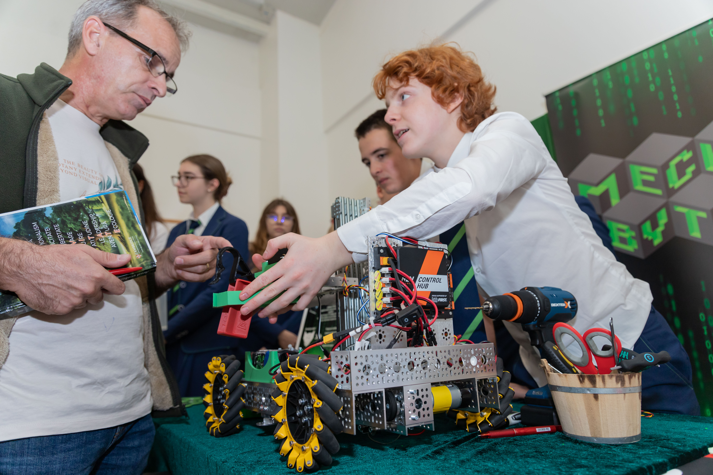
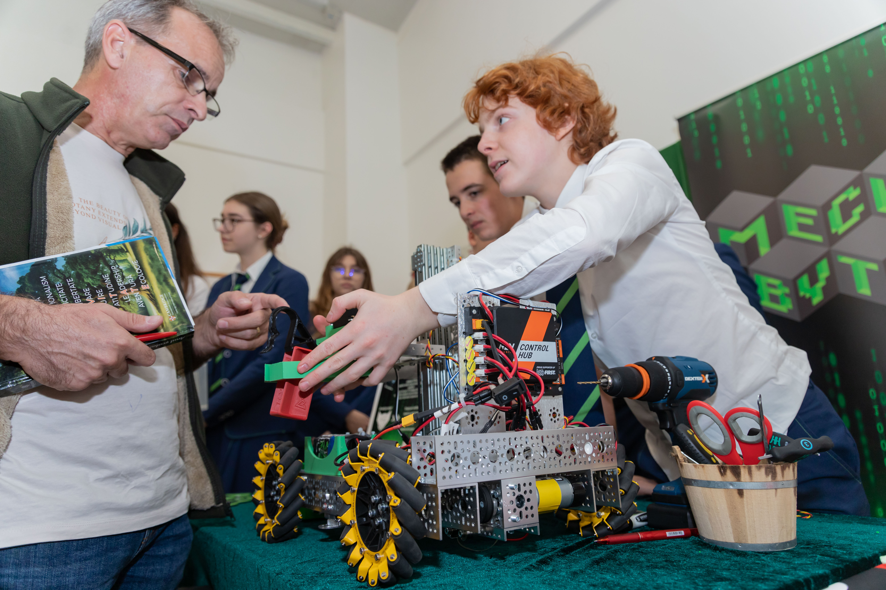
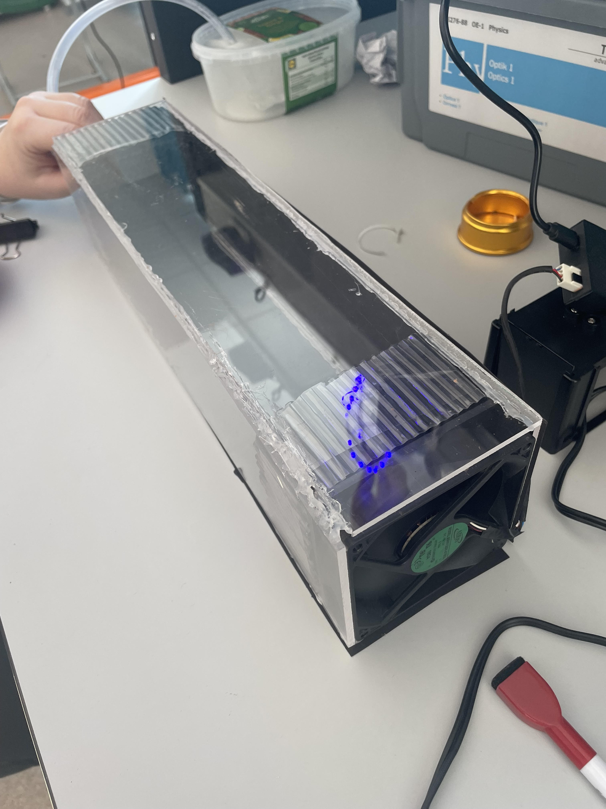
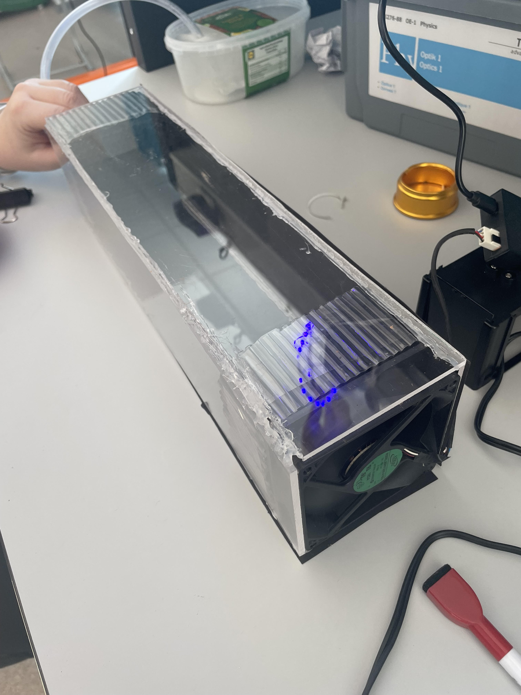

Science Fair
Inspired by the genius of Nikola Tesla, our Science Fair Festival celebrates the power of imagination, innovation, and discovery. It is where ideas spark into reality, where students transform curiosity into invention, and where the next generation of creators dares to shape the future — just as Tesla did.
 

 
